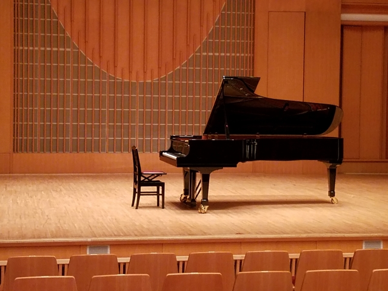
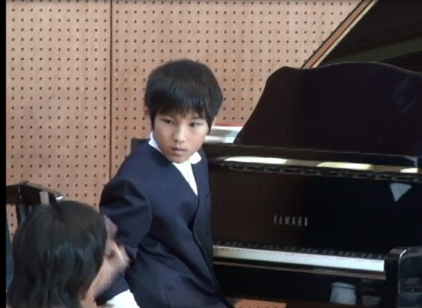
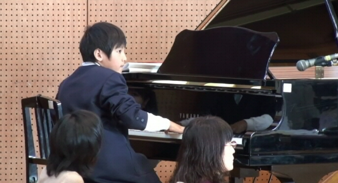
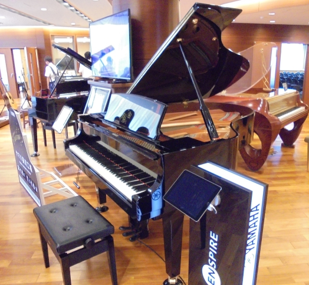

ピアノ
ピアノの取り組み
小学生以前(～6歳)
僕が2歳の頃, 母親がよくクラシックの音楽を聴いていたのですが, その隣で僕もよく聴いていたのだそうです。次第に僕も楽しんで聴くことが多くなり, ある時母親は, あまりに楽しそうに聴くものだから, ピアノ教室に通わせようと決心したのだそうです。 その結果, 2歳という若さでありながら, ヤマハ音楽教室に通うようになり, その頃は熱心に音楽活動に取り組んでいたのだといいます。
ヤマハ音楽教室は, 年齢ごとにコースが決まっており, 3歳(年少)のときには「おんがくなかよしコース」という, グループで教室に集まりながら, 親子でおどったり, うたったりして楽しみながら音楽を学ぶコースに所属していました。 この頃には, ドレミの音階などといった基本を体験することができる授業を受けていたような記憶があります。とはいっても, まだ3歳なので, もちろんながら歌って楽しむことが主眼であり, まだ本格的なものとはほど遠いです。
4・5歳になると, 「幼児科コース」になり, これでやっと教材を用いながら音楽記号や音階, リズムなどを覚え, エレクトーンを扱えるようになります。また, 耳の発達段階であるため, 音楽と親しんでいるうちに自然と, ソルフェージュ能力が磨かれ, 音感を会得することもできました。 この能力は, 後にも耳コピなどをするにあたって必要となる, 重要な能力であるため, 当時このように音楽を習っていて良かったなと, 後々思いました。
また, 5歳には日頃の成果を発揮する機会として, 教室のメンバーと協力して一つの音楽を作りあげる発表会も行われました。この発表会に関しては, 各員がパート分けによってそれぞれのフレーズを習得し, 最終的にそれを合わせて, コンサートホールにてエレクトーンで演奏する。そんなイベントとなっていました。当時の僕はあまりピアノが上手い方ではなかったので, ベースのパートを弾いていた記憶があります。
- 
- コンサートホールのイメージ
後述小3のピアノ発表会はこんな会場だった
小学生(6歳～12歳)
小学生の頃は, ヤマハ音楽教室でお馴染みだった仲間ともお別れして, 「ジュニアスクールのピアノコース」に属しました。このコースでは, 1回のレッスンが30分の個別レッスンで, 1週間ごとに通うこととなっており, 毎日のピアノ練習はもちろんのこと, その他の練習メニューなども課されていました。 また, 教室は市の中でも栄えている駅前にあったので, その帰りにいろいろなところへ, 自転車で行くことも楽しみとしていました。それが, 自転車を好きになるきっかけであったり, サイクリングを行うようになる一つの要因であったのかもしれません。サイクリングページへのリンク
練習や上達について, 当初は, ピアノがあまり上手くなかったので, 譜読みの練習をカードや練習帳を通して行ったり, バーナムやバイエルといった初級のピアノ練習局を弾いていました。 そして, ある程度上手くなると, ブルクミュラーなどの練習曲に移行するという, ピアノの練習曲としてはオーソドックスなレッスンとなっていました。しかし, 僕は徐々にピアノの練習を面倒くさいからとさぼるようになり, 放課後には友達と外に遊びにいくことが多くなってしまいました。 そのため, ピアノの上達度合いとしては, なかなか練習曲が進まず遅かったのではないかなと, 当時を振り返ってみても思います。参考までに, ピアノ練習曲のレベル一覧を載せておきます。
- バイエル:初心者～初級
- ブルグミュラー:初級～初中級
- ソナチネアルバム:初中級～中級
- 
- 小4ピアノ伴奏時の画像1
当時, ピアノとどのように向き合っていたのかというと, 練習はつまらないけれど, 遊びで弾くのは楽しいということで, よく家の電子ピアノに導入されていた, 鍵盤が光ることで曲を弾く練習ができる機能を利用しながら, 「大きな古時計」とか「くるみ割り人形」, 「ハンガリー舞曲第5番」, 「トルコ行進曲」などの曲を弾いていることも多かったです。 それ以外にも, 全然弾けなかったものの「幻想即興曲」や「アイネ・クライネ・ナハトムジーク」などもよく弾いていました。さらに, 弾くのはなにも家だけだはなく, 家電量販店のピアノや, 小学校でも雨の日には, 教室においてあるピアノで「千の風になって」や「世界に一つだけの花」などの歌謡曲も当時好きだったので弾いていました。ただし教室でのピアノ演奏は小学2年生までの話です。
小学3年生になると, ピアノの発表会を再び行う機会がありました。当時は, ピアノの先生と行う曲目で, どの曲なら弾けそうかなどを照らし合わせながら揉めたりしたのですが, 最終的に「主よ人の望みの喜びよ(独名:Herz und Mund und Tat und Leben, BWV 147)」に決定し, 前項画像のようなコンサートホールで弾くこととなりました。 また, 小学3年生の頃になると, ピアノの基礎となるクラシック音楽以外にも, アニメの音楽やゲーム音楽も弾きたいとせがむようになり, 練習曲よりもそちらの方に情熱が移るようになりました。その結果, 「ルパン三世のテーマ」や「名探偵コナンメインテーマ」, スーパーマリオやゼルダの伝説などのゲーム音楽を弾く人として、周りの友達からも有名な存在となりました。そのことが, 次の合唱伴奏を弾くことにも繋がります。
小学4年生の頃, 小学校では合唱を行う学年へとなり, 伴奏者を募る機会がありました。当時の僕は自分のピアノに自身がなかったのですが, 周りの友達の声援に背中を押され, なんとその機会に応募することになってしまいました。後になってオーディションが行われることとなり, 気が重かったのですが, 昼放課の間のオーディションでなんと20人中の5人に選出されてしまい, さらには披露曲が「スーパーマリオワールドの城BGM」と激しかったこともあって, 一番難しい場面が任されてしまいました。 当時を振り返っても, まだまだピアノは下手で, とてもこなせる難易度ではなかったと思うのですが, なんとか必死に練習し, 形にして迎えた本番, 最後の最後にミスをしてしまったものの, なんとか弾き切ることができたので, 良かったと思います。
そんなこんなで迎えた小学6年生。残念ながら徐々にピアノの練習が大変になり, 情熱が薄れる日々。中学生になると忙しくなることなども考慮した結果, 1月でピアノの習い事を辞めることとなってしまいました。今となっては, もっと情熱を持って真剣に練習をし, 取り組んでおけば良かった。そんな後悔が残る思い出ではありますが, 今でも楽しめる趣味の一つとなったこと, これはかけがえのない宝物なのではないかと思っています。
- 
- 小4ピアノ伴奏時の画像2
その後(中学生～)
上記のように, ピアノを辞めてしまったことは確かですが, その後も時々ピアノを弾く機会がありました。中学生の頃は, 時々家に残っていた電子ピアノを弾いたり, 放課の音楽室への移動教室において, 余った時間では音楽室のピアノを弾いたりしていました。 また, 小学生の頃を自分を知っている人も多く, 弾いてくれとせがまれることもあったりで, 充実した日々が過ごせていた気がします。
それと, 今までひたすらピアノの話を続けてきましたが, ここで家にはバイオリンもあった話をしておこうと思います。残念ながらバイオリンを習う機会はなかったのですが, せっかく家にあるのだから触れてみようということで, バイオリンの練習をしてみたのもこの頃です。 しかし, 鍵盤を押せば簡単に音がでるピアノと違って, バイオリンは弓を弾くときの力の入れ方であったり, 音を調整する際の弦の抑える位置が難しかったりで, あまり弾けないまま辞めてしまったことを記述しておきます。もし, バイオリンが弾ける方がいましたら, 話を伺ってみたいですね。(蛇足話終わり)
高校生においては, 音楽の授業はあくまで芸術の授業3種類のうちで, 1つの授業を選ぶこととなっていたので, 美術か音楽で悩んだ結果音楽をやることとなりました。この頃にもピアノのリハビリと言いながら音楽室に早く行き, ピアノの練習をしており, さらにはアニソンやゲーム音楽をよく弾いていたことから, 高校においては一躍有名になっていたそうです。 また, 単に下手なまま弾きにいく訳ではなく, この頃になると, 再びピアノへの情熱が沸いたのか, その場で即興のアニソン演奏を披露したり, 楽譜を仕入れて練習を家で行い, レパートリーを増やすといったことも行っていました。そのため, もっと小学生の頃に真剣にやっておけば良かったと後悔したのもこの頃であります。
そして, そんな努力もあり, なんと高校においては再びピアノを大勢の前で弾く(恐らく)最後の機会がありました。それは, 高校3年生での高校最後の文化祭, 合唱班での伴奏。今までは自分はピアノは下手だからと避けてきたものの, 今回ばかりは1～3年生中, 同じ合唱班メンバーで唯一のピアノ伴奏ができる人という役回りになってのことでした。 音楽の授業が終了してから数ヶ月。久しぶりのピアノ演奏で, 手があまりスムーズに動かない中, 他の役割(ビデオ編集, 部活動の部長)での忙しさもありながら, 何とか形にして発表することができました。恐らくはこれが一生で最後の発表。そのように考えると心残りもありますが, 逆にここで新たな機会を掴んだともいうことができます。 こうして大学に入り今に至る訳ですが, 残念ながらピアノも暫く弾けていません。また, 弾く機会を積極的に作っていこう。そのように考えております。皆さんも何かこの機会に楽器を演奏してみるのはいかがでしょう。
- 
- ヤマハ掛川工場ピアノ展示ホールでの写真